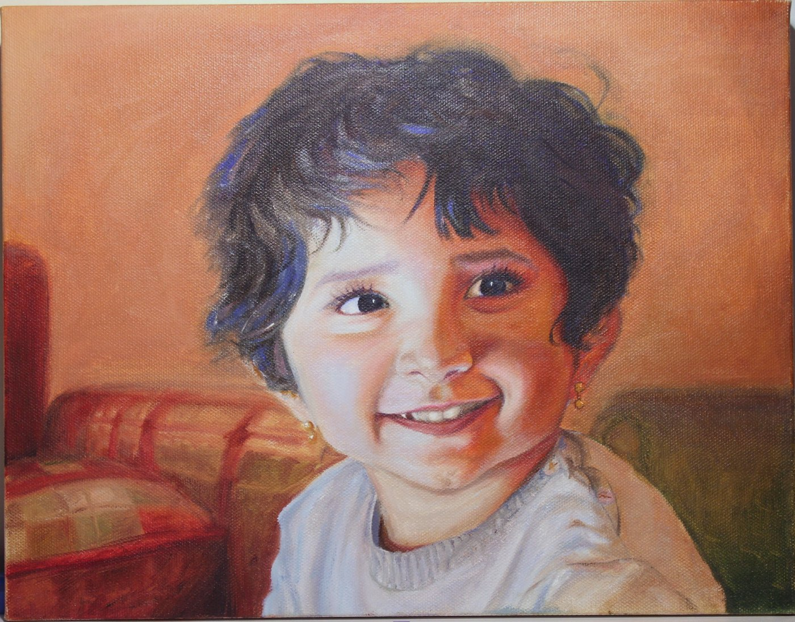
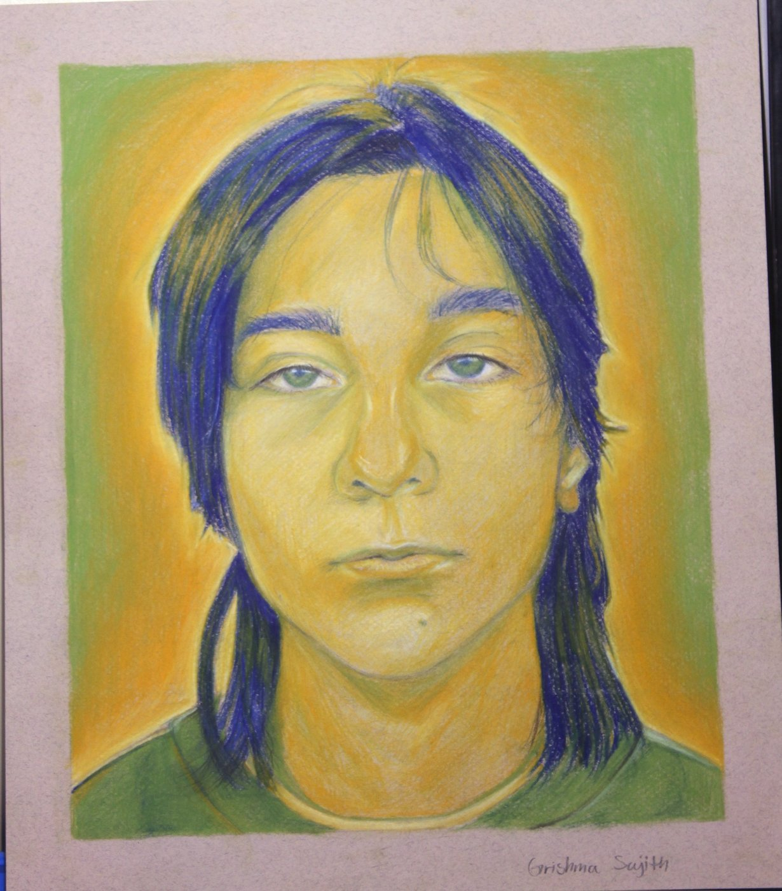
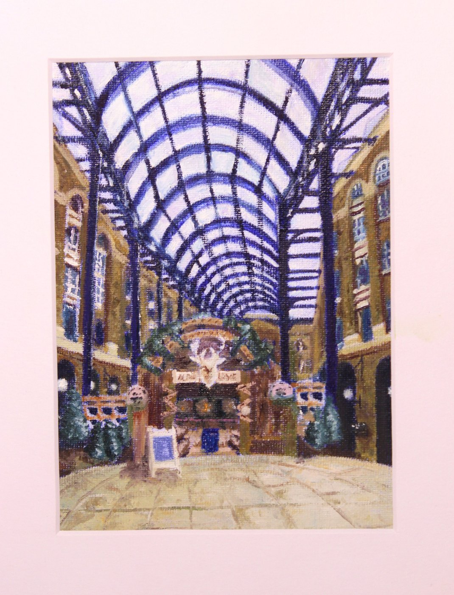
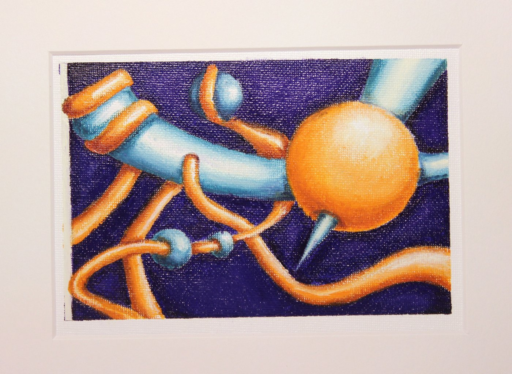
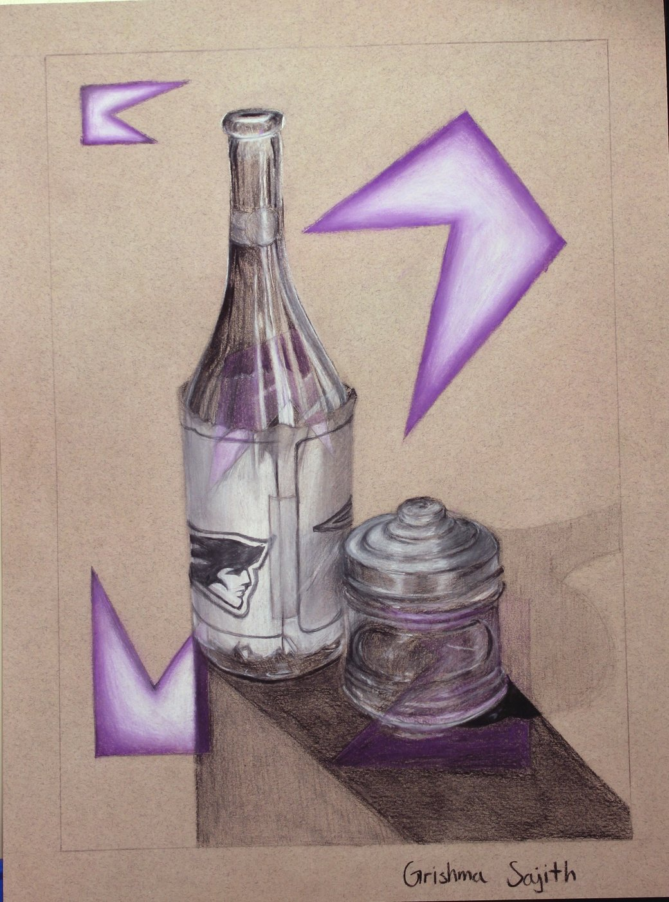
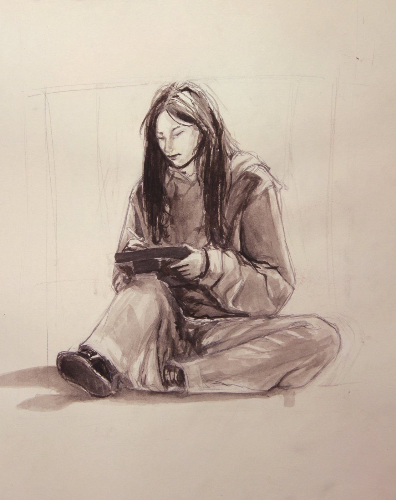
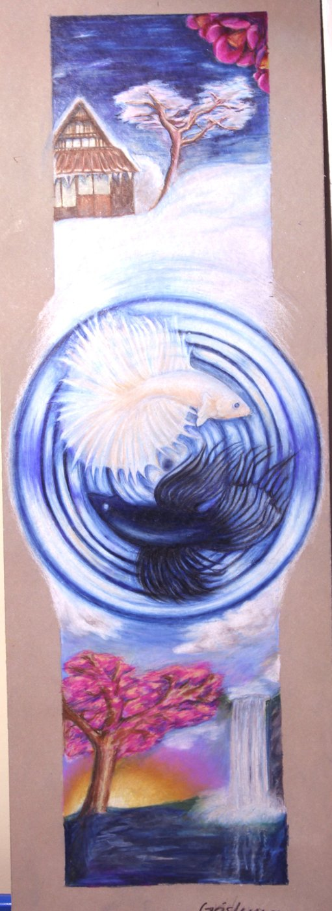

Precise in code. Expressive on paper.
A high school senior at Adlai E. Stevenson High School, working at the point where interactive software and visual art overlap — as comfortable in Java and Python as she is with oil paint, colored pencil, and ink.

Her studio work ranges from observational portraiture to abstract form studies to narrative, symbolic composition — often circling the same question from a different medium.
She's strongest in mathematics, conversationally fluent in French, and drawn to computer science programs that treat visual and interaction design as core coursework, not an elective.
Outside the studio and the codebase, she plays bass guitar and piano. Most of her best work happens alone, at a desk, with something half-finished in front of her.
Education
Adlai E. Stevenson High School
Weighted GPA 4.28 · Unweighted 3.72
Code & tools
Studio & design
Coursework

A close friend, in cool greens and warm yellows, studied in direct, unflinching light.





A flow-field generator that treats particles like brushstrokes — translating the logic of Perlin noise into painterly, print-ready compositions.
A lightweight drawing app with custom brush textures and stroke smoothing — an interface designed the way she'd actually want to draw.
Award · April 2025
Self Portrait, oil painting
Selected for the North Suburban Conference Art Show and published in the school's creative arts magazine.